6E7V0013 — Digital Manufacturing | Manchester Metropolitan University
Manufacturing Phone Casings for Phones-R-Us
A semester-long blog documenting additive manufacturing, metrology, assembly testing, and plant simulation in pursuit of 50,000 phones per year.
Ibrahim Ansari · MSc Digital Design and Manufacturing · 2025–26
About
This blog documents my journey through the Digital Manufacturing module at Manchester Metropolitan University, part of my MSc in Digital Design and Manufacturing. Each week I'll be posting reflections on what I've learned, what I've made, and what didn't go to plan.
The project at the centre of this semester is a manufacturing challenge set by a fictional client, Phones-R-Us. The goal is to produce top and bottom phone casings using additive manufacturing, prove they fit an existing assembly line, and simulate whether the process can scale to 50,000 units a year. It covers 3D printing, metrology, and plant simulation in Tecnomatix.
I'm using this blog as a way to think out loud as much as to document. If you're working on something similar or just curious about digital manufacturing, feel free to follow along.
Week 1
The Brief: Manufacturing Casings for Phones-R-Us
3 February 2026
This semester I'm stepping into the role of a plastic casing manufacturer specialising in additive processes. The client is Phones-R-Us, a fictional company with a target of 50,000 modular mobile devices a year. My job is to manufacture both the top and bottom casings using FDM printing.
Printing a casing is the easy part. The harder part is proving it actually works, fits the master casing produced by a separate supplier, moves through the FESTO CP assembly line without snagging, and that the process behind it can realistically hit that annual volume. That last point is where plant simulation comes in, but I'll work on that later.
Below are the engineering drawings for both the top and bottom casings provided by Phones-R-Us. The bottom casing came with full dimensions and tolerances, which formed the basis for the CAD model. The top casing drawing gave me an early look at the geometry I'll need to work with when I start modelling that half next week.
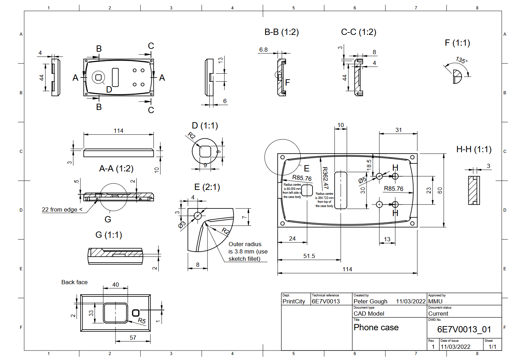
Fig. 1 — GA drawing of the bottom casing provided by Phones-R-Us
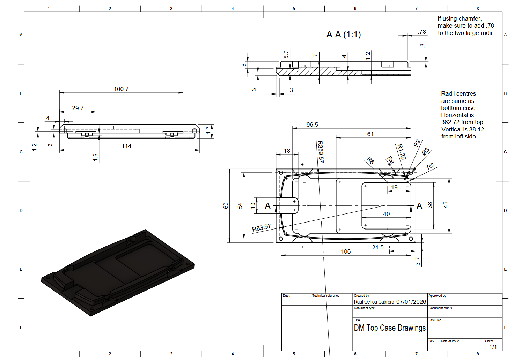
Fig. 2 — GA drawing of the top casing provided by Phones-R-Us
Using the bottom casing drawing, I built the CAD model on Autodesk Fusion this week. The focus was on getting the mating surfaces and critical dimensions right before thinking about print settings or orientation.
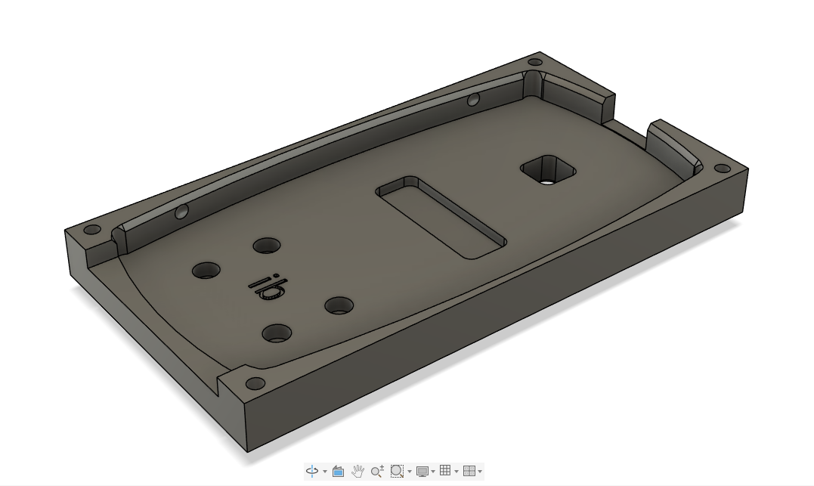
Fig. 3 — CAD model of the bottom casing
What is Industry 4.0?
Industry 4.0 refers to the ongoing shift toward digitally connected manufacturing, factories where machines, processes, and people share data in real time rather than operating in isolation. Zhong et al. (2017) describe it as the integration of cyber-physical systems, the Internet of Things, and cloud computing into manufacturing environments, fundamentally changing how factories operate and communicate. Lasi et al. (2014) further define Industry 4.0 as a dual development driven by both the market pull of shortening product lifecycles and the technology push of increasingly capable digital systems.
Two concepts from this framework sit right at the centre of this project. Vertical integration connects machines and systems within a single factory. Horizontal integration extends that connectivity along the supply chain, upstream to suppliers, downstream to customers. Both matter here because the casing I produce has to slot into a process that already exists, built around parts from a different manufacturer. Getting that coordination right is the whole challenge.
My Plan for the Semester
The nine weeks break down roughly like this. The first two weeks are about getting foundations in place, understanding the drawings, starting CAD for the top and bottom casing. Weeks three and four shift into printing: first attempts, measurement against the drawings, and iterating on whatever doesn't pass. Tofail et al. (2018) note that dimensional accuracy and repeatability remain among the core challenges in additive manufacturing, which is exactly what these early print runs are designed to test. The middle weeks are for refining the process, testing casings on the FESTO line, and documenting what the data shows about printer consistency. The final stretch is plant simulation in Tecnomatix, modelling the six assembly stations, calculating cycle times, and working out how many printers are needed to hit 50,000 units a year.
6Assembly stations
50kPhones per year target
52Weeks to deliver
803D printers available
Why This Matters
The obvious answer is that digital manufacturing is faster and more flexible than traditional tooling-based production. A design change that would take weeks in injection moulding takes hours here. But the more interesting point is what simulation adds on top of that. Building a virtual model of the assembly line before committing to a physical setup means you can test scenarios, what happens if one printer goes down, or cycle time on station three runs long, without it costing anything except compute time. For a target like 50,000 units, that kind of planning is required. The numbers only work if the whole system is thought through, not just the parts.
The challenge I'm most interested in is consistency across prints. Additive manufacturing gives you iteration speed, but it doesn't automatically give you repeatability. Proving that the process is stable enough to supply a production line is a different problem from proving that one casing fits. Zhong et al. (2017) argue that intelligent manufacturing systems built on Industry 4.0 principles are precisely what close that gap, using real-time data to maintain process stability at scale. That tension between flexibility and consistency is what this unit is really about.
References
Lasi, H., Fettke, P., Kemper, H., Feld, T. and Hoffmann, M. (2014) 'Industry 4.0', Business and Information Systems Engineering, 6(4), pp. 239–242. Available at: https://doi.org/10.1007/s12599-014-0334-4 (Accessed: 3 February 2026).
Tofail, S., Koumoulos, E., Bandyopadhyay, A., Bose, S., O'Donoghue, L. and Charitidis, C. (2018) 'Additive manufacturing: scientific and technological challenges, market uptake and opportunities', Materials Today, 21(1), pp. 22–37. Available at: https://doi.org/10.1016/j.mattod.2017.07.001 (Accessed: 3 February 2026).
Zhong, R., Xu, X., Klotz, E. and Newman, S. (2017) 'Intelligent Manufacturing in the Context of Industry 4.0', Engineering, 3(5), pp. 616–630. Available at: https://doi.org/10.1016/J.ENG.2017.05.015 (Accessed: 3 February 2026).
Week 2
CAD Complete & First Print Sent
10 February 2026
The first priority this week was finishing the CAD model for the top casing. Unlike the bottom casing which was modelled directly from engineering drawings, the top casing was reverse engineered from the master part using measurements taken with digital callipers. Getting this done first mattered because without both halves modelled, there was no way to properly evaluate the snap fit geometry between them.
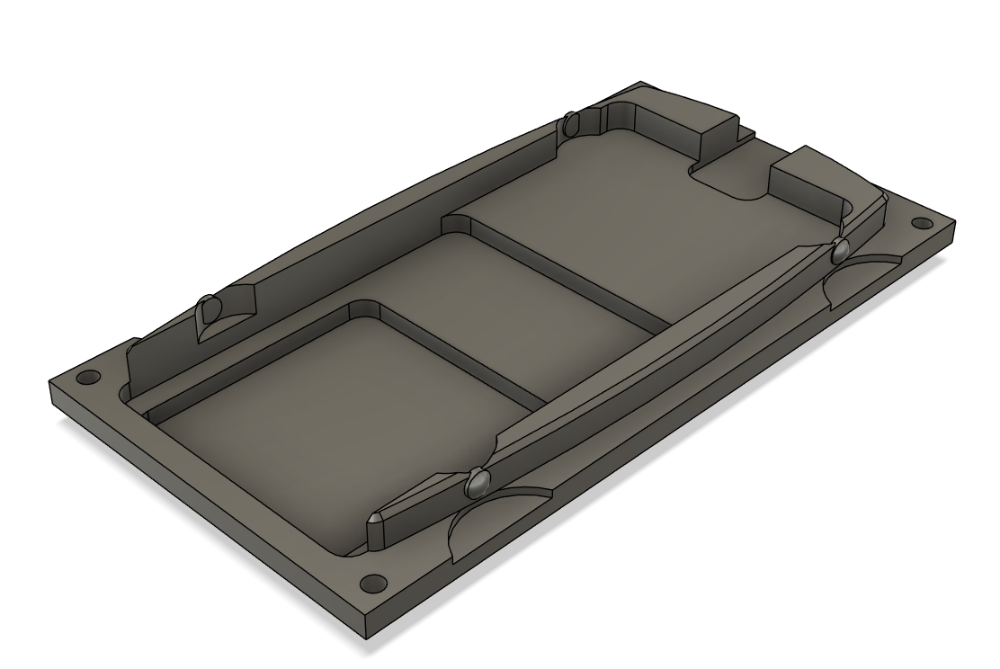
Fig. 4 — CAD model of the top casing
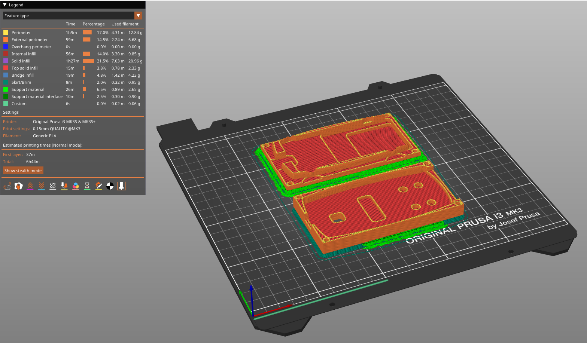
Fig. 4.1 — PrusaSlicer preview showing both casings on the print bed with supports (green) and brim, estimated print time 6h 44min
Print Parameters — Week 2 (Prusa MK3S)
Parameter
Value
Printer
Prusa MK3S
Material
PLA
Layer height
0.15mm
Infill
15%
Infill pattern
Gyroid
Bed temperature
60°C
Nozzle temperature
215°C
Supports
Yes
Brim
Yes
Ironing
No
Print time
6h 44min
With both CAD models complete, I sent them to the Prusa MK3S. I went with 0.2mm layer height, 15% infill, a brim for bed adhesion, and supports enabled for the overhanging geometry on the bottom side of bottom case. The prints ran overnight and both came off the bed with minor warping.
Removing the supports was more difficult than expected. The supports were generated for a small ledge feature on the underside of the bottom casing. The support material had bonded quite aggressively to this area, and getting it out cleanly without marking the surface took more effort than it should. This is something to address in the next iteration, either by adjusting the support interface settings or increasing the Z distance between the support and the part.
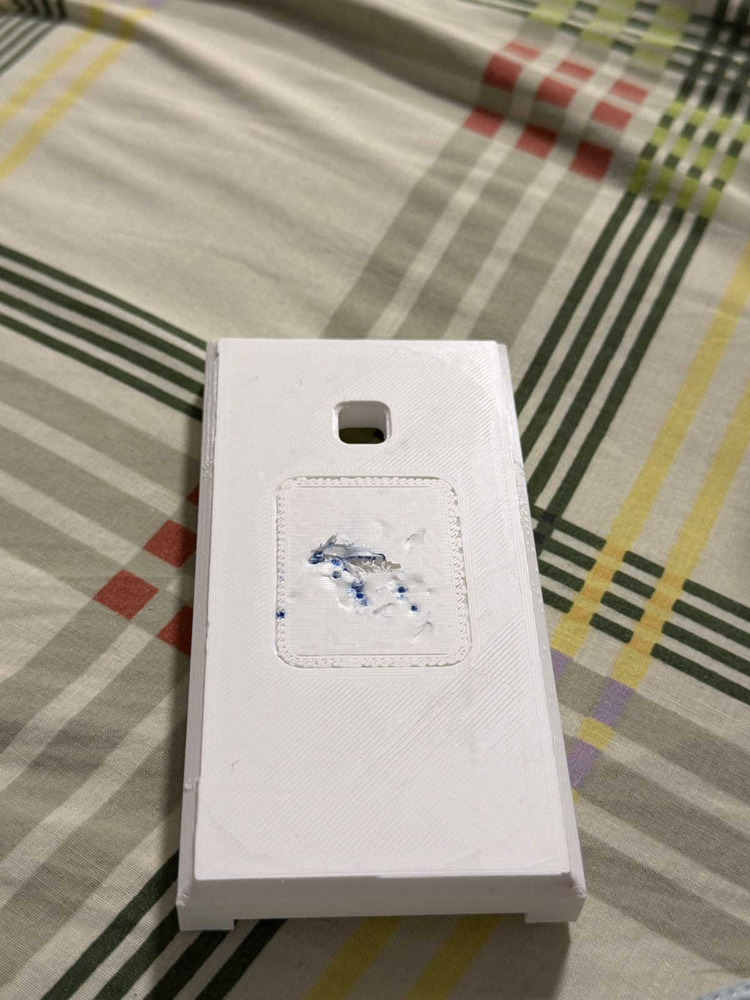
Fig. 5 — Support material on the bottom casing after printing, proving difficult to remove cleanly
The inside surface of the bottom casing also highlighted another issue. Without ironing enabled, the top surface finish was rough and uneven. Ironing is a slicer setting that makes a second pass over flat top surfaces to smooth them out, and skipping it on this first print left a finish that would not be acceptable in a production context.
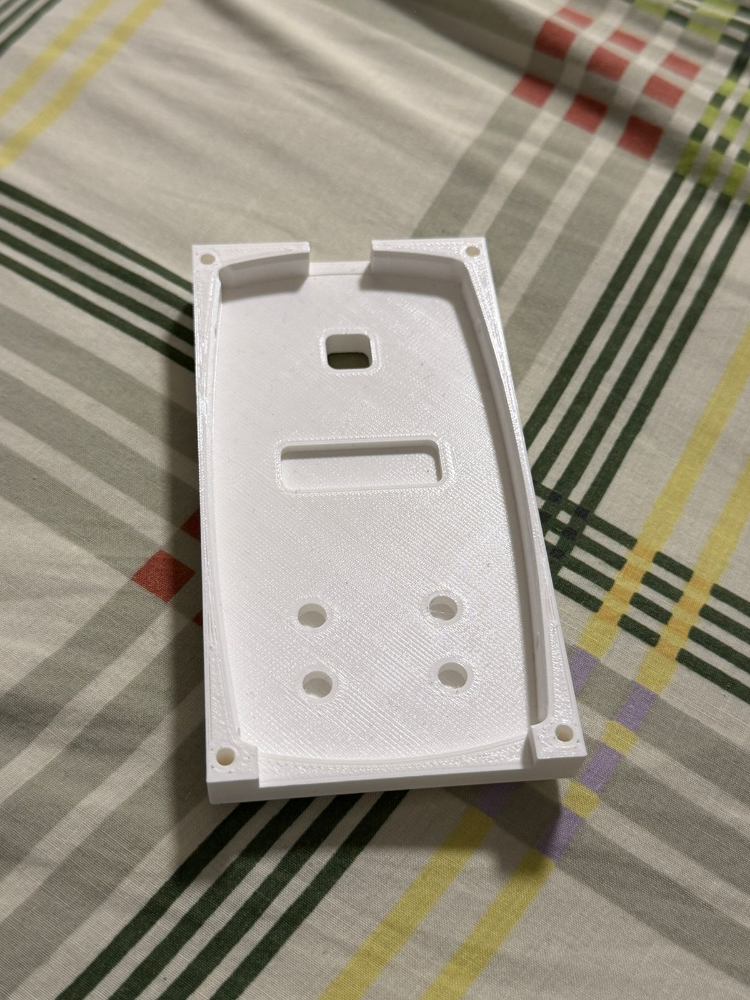
Fig. 6 — Inside surface of the bottom casing, printed without ironing enabled
The bigger issue was the snap fit. Once assembled, the connection between the two casings was far too loose, there was noticeable play and no satisfying click when the halves came together. This points to a geometry problem in the CAD rather than a print quality issue.
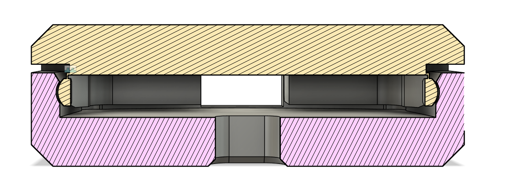
Fig. 7 — Snap fit between the top and bottom casing after first print
The snap fit deflection and engagement depth need to be revised before the next print. I'll be going back into the model to increase the interference on the locking feature and stiffen the snap geometry slightly.
The overall dimensions on both parts look broadly correct on first inspection but I haven't tweaked the snap fit dimensions. That happens next week. The purpose of this first print was to confirm the geometry is workable and identify the obvious problems early. The support bonding, surface finish, and loose snap fit are the three things to fix going into the next iteration.
Week 3
Print Iteration — Supports & Snap Fit
17 February 2026
This week was focused on two problems that the first print made visible: support removal damage and snap-fit geometry. I switched from the Prusa MK3S to the Bambu Labs P1S for this round of prints. One of the advantages of the P1S is that its multi-material and automatic support system is significantly better calibrated out of the box, and for this geometry it turned out I didn't need supports or a brim at all. The P1S handled the ledge feature on the underside of the bottom casing without them, which immediately solved the support removal problem from last week.
With supports out of the equation, I turned my attention to surface finish. I enabled ironing this time, running it at 60% speed and 20% flow. Ironing makes a second slow pass over flat top surfaces to press down and smooth out the layer lines. Dizon et al. (2018) note that surface roughness in FDM parts is directly influenced by process parameters, which is exactly what the ironing settings are trying to control. The result was noticeably better than the first print, though not perfectly smooth. Chua and Leong (2014) point out that achieving consistent surface finish in additive manufacturing typically requires multiple iterations of parameter tuning, and this print was no different, the settings will need further tweaking in the next iteration.
Print Parameters — Week 3 (Bambu Labs P1S)
Parameter
Value
Printer
Bambu Labs P1S
Material
PLA
Layer height
0.2mm
Infill
15%
Infill pattern
Gyroid
Bed temperature
55°C
Nozzle temperature
220°C
Supports
No
Brim
No
Ironing
Yes — 60% speed, 20% flow
Print time
1h 50min
Filament used
50g
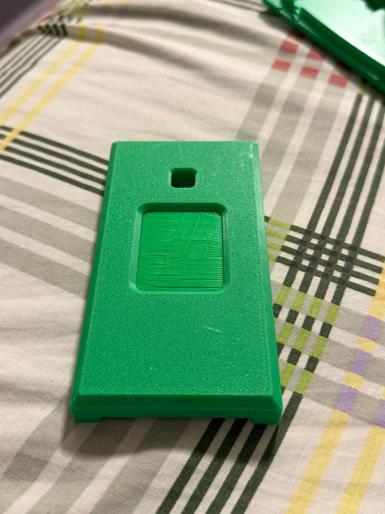
Fig. 9 — Bottom casing printed on the Bambu Labs P1S without supports or brim
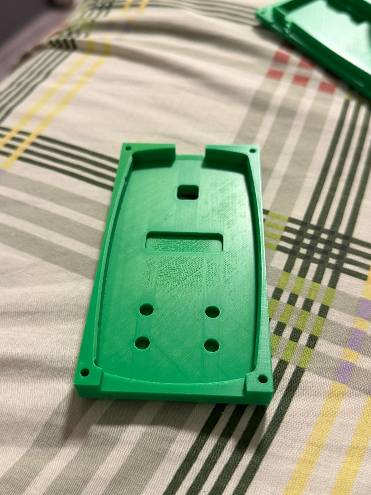
Fig. 10 — Bottom casing top surface with ironing enabled at 60% speed and 20% flow. Better than without ironing but not yet consistent enough.
The snap fit needed adjusting too. I moved the locking feature closer and trimmed it down — made the circle smaller and cut it off at the top and bottom. After reprinting, the two halves clicked together properly for the first time.
The main takeaway from this week is that small changes matter. Sub-millimetre adjustments to geometry and minor slicer setting tweaks both had noticeable effects on the final part. Camposeco-Negrete (2020) confirms that FDM parameters such as layer height, speed, and flow rate significantly influence both dimensional accuracy and surface quality. Logging each change is the only way to know what actually made the difference.
References
Chua, C. and Leong, K. (2014) 3D Printing and Additive Manufacturing: Principles and Applications. 4th edn. World Scientific. Available at: https://doi.org/10.1142/9008 (Accessed: 17 February 2026).
Dizon, J., Espera, A., Chen, Q. and Advincula, R. (2018) 'Mechanical characterization of 3D-printed polymers', Additive Manufacturing, 20, pp. 44–67. Available at: https://doi.org/10.1016/j.addma.2017.12.002 (Accessed: 17 February 2026).
Camposeco-Negrete, C. (2020) 'Optimization of FDM parameters for improving part quality, productivity and sustainability of the process using Taguchi methodology', Progress in Additive Manufacturing, 5, pp. 347–360. Available at: https://doi.org/10.1007/s40964-020-00135-9 (Accessed: 17 February 2026).
Week 4
Measurement & Process Capability
24 February 2026
This week moved away from printing and into measurement. The casings were tested on the FESTO CP lab assembly line to check how they perform in a real production context. The machine gives you an immediate reading of whether your part is within tolerance. It also tests the snapfit of the bottom case with a master part which is made with injection moulding. My part snapped perfectly onto the master part with no room for wiggle. For this iteration I ran ironing at 50% speed and 20% flow, a slight adjustment from last week's 60% speed setting. The inner surface looks much better than last week. I also ran my previous week's parts on the festo machine to see the tolerence on those as well.
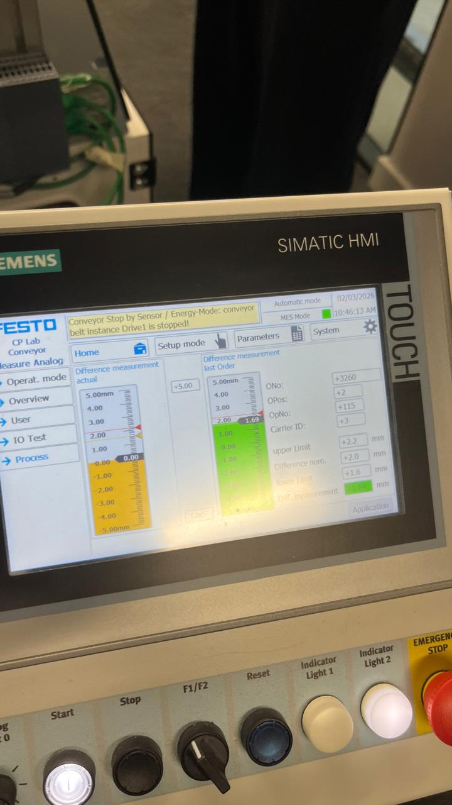
Fig. 11 — FESTO CP lab measurement readings for the phone casing
The middle extrude feature came in at 1.69mm. The tolerence specifies a limit of 1.6–2.2mm, so it passes, but it is sitting close to the lower boundary for comfort. In a production context that margin is uncomfortable. A small shift in ironing settings, flow rate, speed, or even filament batch variation, could push that dimension below 1.6mm and cause a failure on the line. The fact that ironing directly affects this surface means the print parameters have a direct impact on whether the part is within tolerance.
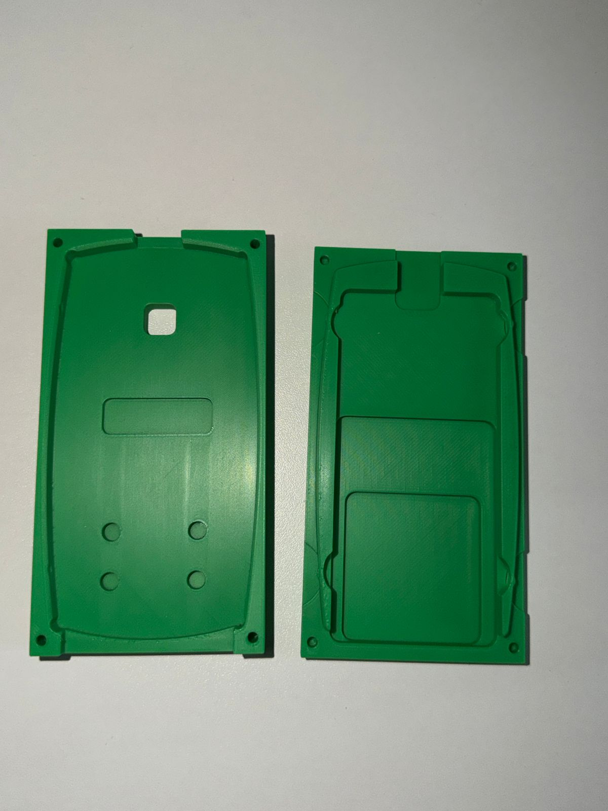
Fig. 12 — Top surface finish with ironing at 50% speed and 20% flow
The back of the casing still required supports for the ledge feature. Removal was cleaner this time compared to the Prusa print in Week 2, but there is still some surface marking left behind. This remains something to address in the next iteration.
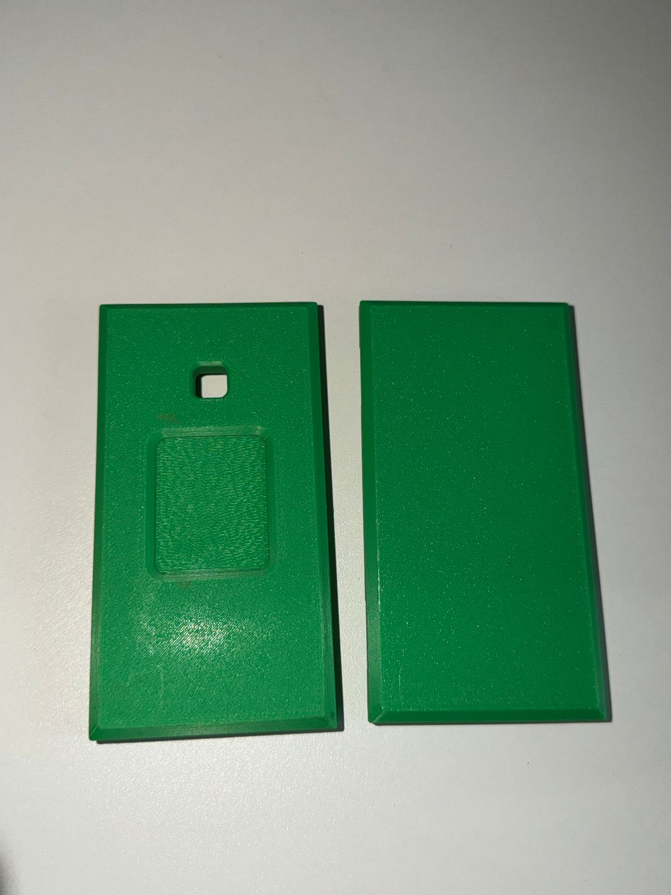
Fig. 13 — Back of the bottom casing after support removal
In this iteration, I perfected the snapfit and came close with the ironing finish. This is where process capability becomes relevant. Passing one print is not the same as proving the process is capable. To have confidence in the 1.69mm result, I would need to print multiple parts under the same conditions and measure the variation across them. If the spread of results sits comfortably within the 1.6–2.2mm window, the process is capable. If results cluster near 1.69mm with any meaningful variance, the lower limit becomes a real risk. The next step is running repeated prints with locked ironing settings and measuring the consistency.
References
[Author Surname, Initial.] ([Year]) [Title of source]. [Publisher / Journal]. Available at: [URL] (Accessed: [Date]).
Week 5
Iteration — Geometry & Surface Finish
3 March 2026
This week focused on two adjustments: pushing the middle extrude feature further into the tolerance window and refining the ironing settings. I changed the extrude depth in CAD from -2mm to 2.45mm to increase the feature size, and nudged the ironing from 50% speed 20% flow to 50% speed 21% flow. The surface finish came out noticeably smoother than last week.
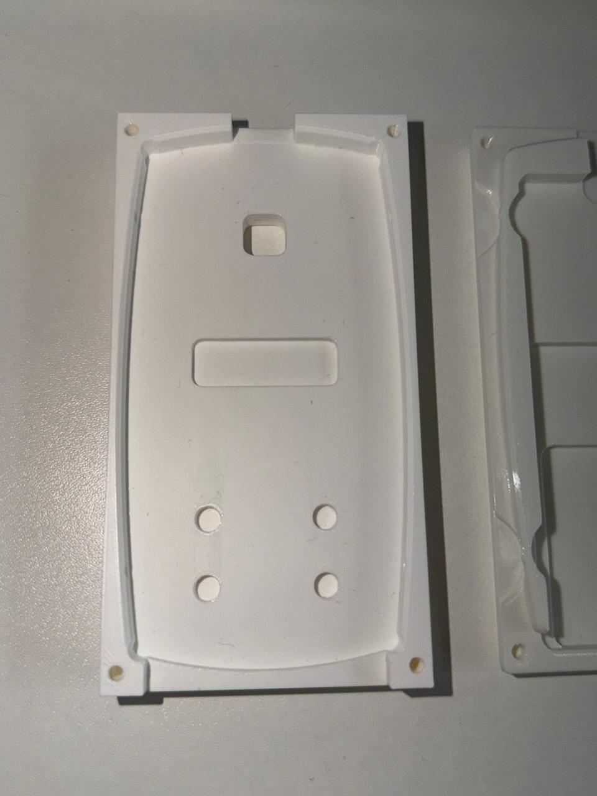
Fig. 14 — Top surface finish with ironing at 50% speed and 21% flow, noticeably smoother than the previous iteration
The back of the casing was also messier this time around, with support removal leaving one streak.
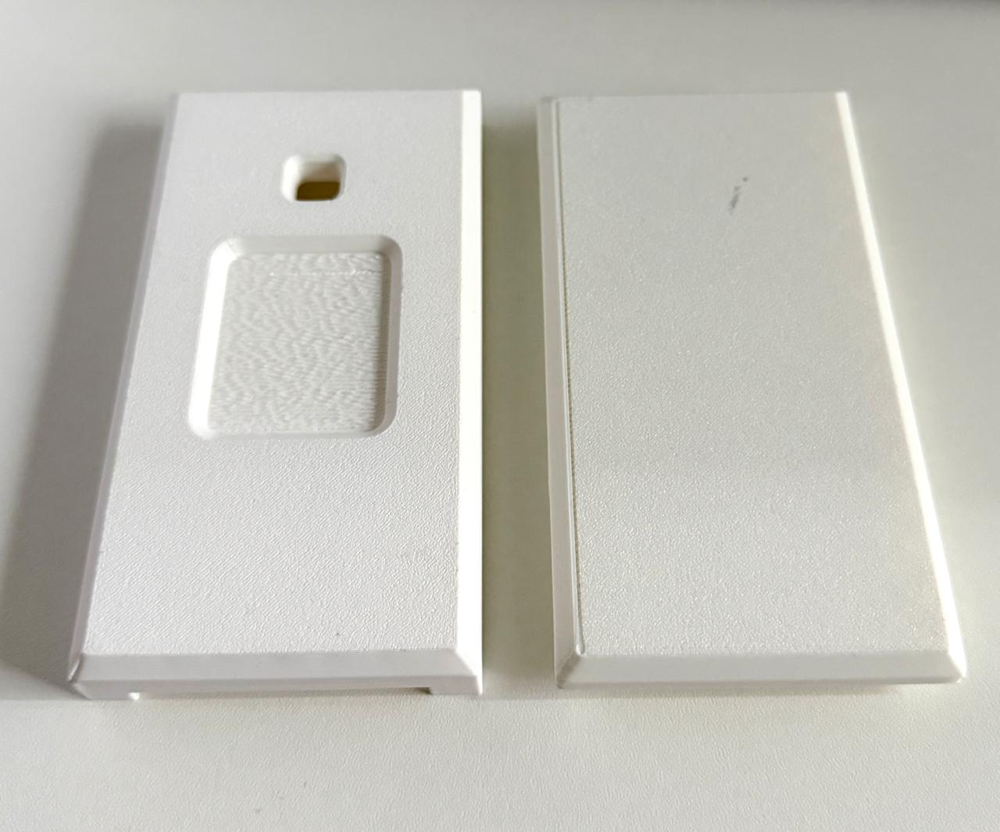
Fig. 15 — Back of the bottom casing after support removal, week 5
The FESTO measurement told a different story though. The middle extrude feature came in at 2.19mm. The upper limit is 2.2mm, so it technically passes, but it is now sitting at the opposite end of the tolerance window from last week. Going from 1.69mm to 2.19mm in one iteration means the geometry change overcorrected. The tolerance window is 1.6–2.2mm, and the target should be somewhere near the middle of that at around 1.9mm. Right now the results are bouncing between the lower and upper boundaries rather than settling in the middle.
The next step is a smaller geometry adjustment, pulling the extrude back slightly to bring the feature closer to the centre of the tolerance band. The ironing settings feel close to right now but i might tweak it a bit. I don't like how the ledge feature at the back of the bottom case looks with supports I might need to figure out a way to make a smoother finish there with custom supports.
References
[Author Surname, Initial.] ([Year]) [Title of source]. [Publisher / Journal]. Available at: [URL] (Accessed: [Date]).
Week 6
Multi-Supplier Variability & Quality
10 March 2026
📊[ Placeholder: PFMEA table or process capability chart ] Add your PFMEA table, Cpk data, or a measurement distribution chart here.
FESTO Test This Week
🏭[ Photo: FESTO test this week ]
[Note: e.g. Tested a batch of three casings from different print runs. All three passed Station 5, but measurement values ranged from 1.7mm to 2.0mm, illustrating within-batch variation.]
References
[Author Surname, Initial.] ([Year]) [Title of source]. [Publisher / Journal]. Available at: [URL] (Accessed: [Date]).
[Author Surname, Initial.] ([Year]) [Title of source]. [Publisher / Journal]. Available at: [URL] (Accessed: [Date]).
[Author Surname, Initial.] ([Year]) [Title of source]. [Publisher / Journal]. Available at: [URL] (Accessed: [Date]).
Week 7
Tecnomatix Plant Simulation — Building the Model
17 March 2026
This week I began building the virtual assembly line in Tecnomatix Plant Simulation. The physical FESTO CP lab has six stations: a Picking Station, a Light Station, a Press Station, an Oven Station, a Measuring Station, and an Output Station. Each station was replicated at a process level in the simulation, with cycle times drawn from observations made on the physical line. The model also includes the 3D printer selected for production, which feeds parts into the line.
Configuring the simulation required decisions about how to represent resources. I added a Worker Pool to handle the manual operations, a Shift Calendar defining the working hours and break patterns, and an Experiment Manager to automate the process of running multiple scenarios with different parameter combinations. The Bottleneck Analyzer was configured to run in parallel with the main simulation, identifying which station is constraining throughput on each run.
Inputting cycle times from the physical line into the simulation was not straightforward. The FESTO lab cycle times are fixed for the physical stations, but the 3D printer's cycle time depends on part geometry, layer height, infill density, and the number of parts per build plate. I measured the print time per casing for the current slicer configuration and used this as the input for the printer resource in the simulation. The number of printers in the model became a variable to optimise.
Initial runs with a single printer showed immediately that the printer was the bottleneck. The six assembly stations have combined cycle times that can process parts faster than a single printer can produce them. This is a common finding in additive manufacturing production scenarios: the printer throughput, not the assembly line capacity, sets the ceiling. Addressing this means adding printers, reducing print time per part, or both. The simulation makes it straightforward to test each option without committing capital expenditure.
🖥️[ Screenshot: Tecnomatix model mid-build — Week 7 ] Add your screenshot of the simulation layout here. Show the six stations, resources, and connections.
References
[Author Surname, Initial.] ([Year]) [Title of source]. [Publisher / Journal]. Available at: [URL] (Accessed: [Date]).
[Author Surname, Initial.] ([Year]) [Title of source]. [Publisher / Journal]. Available at: [URL] (Accessed: [Date]).
[Author Surname, Initial.] ([Year]) [Title of source]. [Publisher / Journal]. Available at: [URL] (Accessed: [Date]).
Week 8
Hitting 50,000 Phones Per Year — Results
24 March 2026
The simulation ran over a 365-day period with the final optimised configuration and produced 52,640 units. The Phones-R-Us target of 50,000 phones per year is met, with 2,640 units of headroom. Reaching this figure required a sequence of deliberate optimisation steps, guided by the Bottleneck Analyzer rather than by guesswork.
The path from the initial single-printer model to the final configuration involved three main changes. First, the printer count was increased. The Bottleneck Analyzer confirmed the printer as the primary constraint on every early run, so adding printers was the highest-impact lever available. Second, I adjusted the Shift Calendar: the initial configuration assumed a single 8-hour shift with a 30-minute break and no weekend operation. Extending to a 16-hour operating day, still within realistic assumptions for a small production facility, made a substantial difference to annual throughput. Third, I reviewed the cycle times at each station against the bottleneck data. The Oven Station showed secondary congestion on longer runs, and a small adjustment to the oven dwell time, informed by the physical line data, resolved this.
The Experiment Manager allowed me to run these parameter combinations systematically. Rather than changing one variable at a time and waiting for each simulation run to complete, I configured a parameter space with defined ranges for printer count and shift length, and the Experiment Manager ran all combinations overnight. The 52,640 result came from the combination identified by this automated search as the highest-throughput configuration that stays within the resource constraints defined in the brief.
The 52,640 figure is a modelled estimate, not a measured output. The model's accuracy depends on how well the input cycle times represent the real process, and on assumptions about uptime, reject rates, and shift adherence. A production-ready model would incorporate reject rates from the FESTO measuring station data, printer downtime estimates from machine manufacturer data, and a more detailed shift pattern. For the purposes of this assessment, the model demonstrates that the 50,000 target is achievable under realistic operating assumptions.
📈[ Screenshot: Final Tecnomatix simulation result — 52,640 units/year ] Add your final simulation screenshot here. Show the output figure, resource utilisation data, or Bottleneck Analyzer results.
References
[Author Surname, Initial.] ([Year]) [Title of source]. [Publisher / Journal]. Available at: [URL] (Accessed: [Date]).
[Author Surname, Initial.] ([Year]) [Title of source]. [Publisher / Journal]. Available at: [URL] (Accessed: [Date]).
[Author Surname, Initial.] ([Year]) [Title of source]. [Publisher / Journal]. Available at: [URL] (Accessed: [Date]).
Week 9
Lessons Learnt & Reflection
31 March 2026
Nine weeks of printing, measuring, testing, and simulating produced a set of conclusions that are harder to reach by reading about digital manufacturing than by doing it. The most consistent finding across every stage of the project is that process documentation is the real product. The physical casings matter, the simulation results matter, but neither is worth much without the records of what was changed, why, and what happened as a result.
The multi-supplier variability challenge is not solved by tolerances alone. Two suppliers can both produce parts that pass inspection individually and still create problems when their parts are mixed on an assembly line. The PFMEA process made this concrete: it forced me to think about failure modes that only appear at the system level, not at the individual part level. Plant simulation extends this thinking further, allowing you to model what happens to throughput when reject rates change, or when a supplier's process drifts. These are not hypothetical concerns; they are the everyday reality of contract manufacturing.
The plant simulation confirmed a result that is obvious in retrospect but easy to underestimate: printer throughput, not assembly line capacity, is the binding constraint for additive manufacturing at the volumes Phones-R-Us requires. The FESTO line can process parts faster than any single printer can supply them. Reaching 52,640 units per year required a multi-printer configuration and a shift pattern that keeps those printers running for a sustained portion of each day. These are capital and operational decisions. The simulation gives you the data to make them before committing resources, which is the core value proposition of digital manufacturing tools in an Industry 4.0 context.
[Placeholder: Add your own personal reflection here. What was the most surprising finding from the physical printing work? What would you do differently if you started the project again? How has this module changed how you think about manufacturing processes or digital tools?]
🏁[ Photo: Final casings — assembled phone ] Add your closing image here. Suggested: the final printed top and bottom casings assembled together, or a photo of the phone on the FESTO line.
References
[Author Surname, Initial.] ([Year]) [Title of source]. [Publisher / Journal]. Available at: [URL] (Accessed: [Date]).
[Author Surname, Initial.] ([Year]) [Title of source]. [Publisher / Journal]. Available at: [URL] (Accessed: [Date]).
[Author Surname, Initial.] ([Year]) [Title of source]. [Publisher / Journal]. Available at: [URL] (Accessed: [Date]).